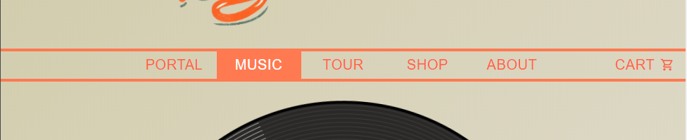
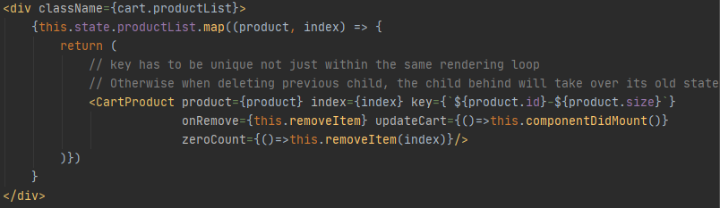
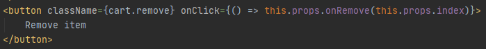
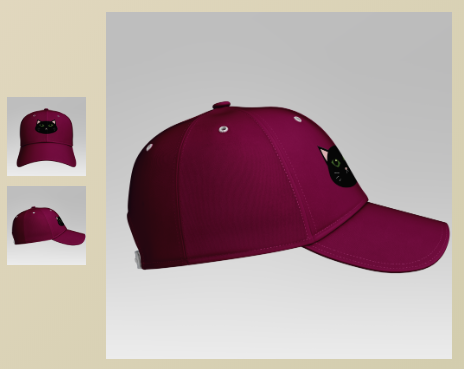
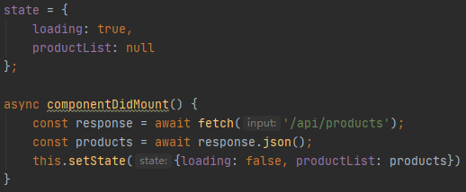
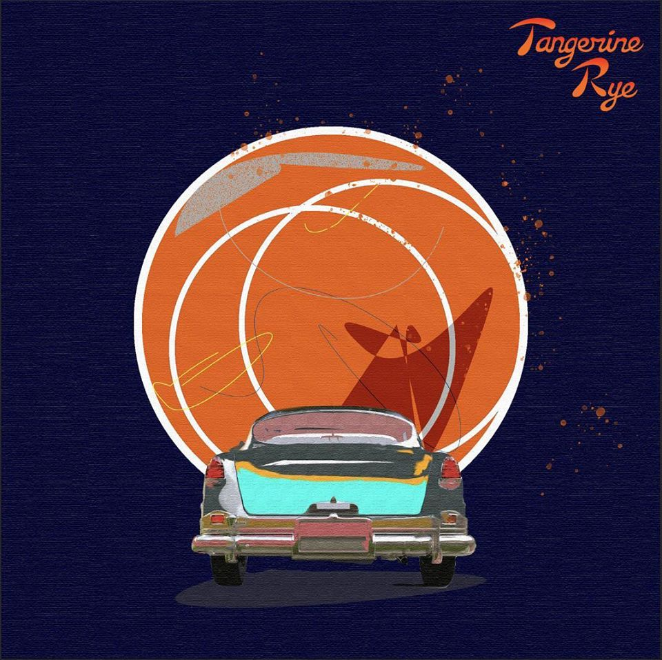
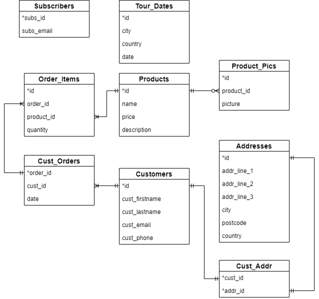

We generated HTML with React framework. We chose React as we wanted to learn the industry standard. We used divisions very well, combining with css styling and React JSX ES6 style.
We generated CSS with React, and made CSS module stylesheets for each page. We also designed responsive pages that resizes components on mobile screens with @media. This included changing the flex-direction from row to column, and various different min-width sizes found through trial and error. The animated gradient background was also made with CSS. Although the spinning vinyl-record on the music page was not made by us (taken from codepen), the CSS to contain the album and single EP covers on the vinyl record was made by us. It was difficult to get the pictures to align in a triangle symmetrically, so the alignment is not perfect. Our initial idea for the record containing album stickers were to have them play the music when clicked. However, spotify/youtube can only have embed code through iframe. We did not want to have the full music just play on the website as this meant there will be no royalties received from playing. Hence, we just placed the spotify and youtube iframe below the record. There are still hover animations associated with the stickers but no associated clickEvents are programmed. We also made sure that there are no style tags in the code, but all CSS styling is done by div className tags.
We also investigated several issues with CSS and React:
- Font-awesome and material-ui icons behaved differently for style tags, so our solution was to make different functions that styled font-awesome icons with a div tag. This can be seen in client/src/views/IconBar.js, as well as using "withStyles" method (see client/src/views/ButtonStyle.js) to modify their styles.
We have investigated eventListeners, eventHandlers, stateHandlers and browser routers with client-side JS framework, React. We also created animation with CSS.
We spent efforts in keeping our code DRY, which means we have a number of child components that are called by parent components. We also learnt how to pass data and functions between parent and child components.
- The overhead logo and navigation bar, as well as the footer are components that are called by every page. On the selected page, the responding tab will display differently. This is achieved by passing down property (props) from the page to the OverHeadBar.js component: 
-
TOUR, SHOP, and CART pages fetch data from database then render each item as a
child component. This is done by mapping the json arrays:
client/src/views/ShoppingCartPage.js 
The above code snippet shows how we rendered the products in our shopping cart page. After fetching the products in the shopping cart from the local storage, we map them one by one and render them in the child class "CartProduct". We also pass 3 functions from the parent to the child (onRemove, updateCart and zeroCount) as props, so that we can update the parent from the child by calling back.
client/src/Component/CartProduct.js 
This is also used on updating the same page. In product's detail page, there are products that have multiple pictures, they are rendered as small images on the left and user can click on them to render them on the right with a bigger size. On cat Cap detail page, the bigger image on the right is rendered by clicking its small image on the left, while the url stays unchanged: 
One important thing we learnt from rendering child classes by mapping is that we need to provide a unique key to React. This key cannot only be unique within the loop, i.e. key={index}. Because in this way, if we update the array and removed the first object, the previous second object will take over the first place, thus it will also take over the old child state of when key={0}.
For example: if we have product A with attribute "count"=2 and product B with attribute "count"=1. They will be rendered one by one by calling the child component in the mapping loop. So React will know them as key={0} (for product A) and key={1} (for product B). So in the child states, product A will have this.state.count=2, while product B's is 1. This is correct. Now if we click the button in the child component to remove product A from the array in the parent component, then re-render the child component by mapping, the index for product B will become 0, thus key={0} for product B, as opposed to its previous key={1}. Then React will give B the state that was assigned to key={0}, which belonged to product A, and displays this.state.count=2, instead of 1.
This shows how important the key attribute is in mapping child component. It has to associate with an unique property within the object, rather than a random looping index.
-
We used async functions when fetching data from the database.
client/src/views/MerchPage.js 
This allows us to load the data and tell the user we are still loading, then render the page after loading is completed.
- We have a thorough understanding of the different type of functions: the one with arrow and the one without. When calling a function from within the JSX component call, it is important to call it with arrow format, otherwise it will be called every time that piece of code is reached (if this piece of code is in render function, it will lead to an infinite loop/call).
All images in the assets folder were taken from
the Tangerine Rye facebook page. Images had to be
manually edited using Photoshop to create transparent
backgrounds. This was done by first cropping and magic wand
to select the white background and deleting it. However, the wand
could not select all of the white background, so manual selection
was done to get all the white background removed. Similar
manipulations were done on the blue album cover. The shadow
was removed completely to make the transparent cover cleaner.
The manipulations on the album cover was undoubtedly harder,
as the black tire and the dark blue background did not contrast
as much as the logo (orange and white).
BEFORE

 AFTER
AFTER
BEFORE

 AFTER
Album covers were also edited by cloning
the background pattern and stamping to remove the
Tangerine Rye logo.
BEFORE
AFTER
Album covers were also edited by cloning
the background pattern and stamping to remove the
Tangerine Rye logo.
BEFORE

 AFTER
AFTER
BEFORE

 AFTER
Additionally, to create our own merchandise from our homemade SVG logo, we
used Photoshop to manipulate the logo onto t-shirt and cap mock-ups. To
create the illusion of the logo being on the merchandise, the logo layer
was set to multiply and opacity was slightly decreased to mimic the t-shirt
creases and the cap texture. The t-shirt and cap mock-ups were found online.
AFTER
Additionally, to create our own merchandise from our homemade SVG logo, we
used Photoshop to manipulate the logo onto t-shirt and cap mock-ups. To
create the illusion of the logo being on the merchandise, the logo layer
was set to multiply and opacity was slightly decreased to mimic the t-shirt
creases and the cap texture. The t-shirt and cap mock-ups were found online.
All icons taken from font-awesome and material-ui were SVG. As all the band logos were professionally made, there was no real use for homemade SVG designs. For the purpose of this assignment, we created a cat SVG logo with Inkscape (because one of the contributors has 5 cats at home and is obsessed with cats!) and pasted it onto a t-shirt and a cap as fake merchandise.
The original cat logo and its merchandise:


The cat logo was created using a combination of freehand drawings (to draw the whiskers), path transformations (cylinders into cat eyes; triangles to curve creating cat ears), as well as grouping and duplicating objects to flip horizontally to create a symmetrical logo (this was done by dragging a guideline down the center to only create half the image first before duplicating object to create mirror image). Photoshop was used to paste logo onto t-shirt and cap mockups (PNG).
For our server, we chose to use Express to make routing easier. We have handled port numbers in both development and production. This included having a separate http port for production (Heroku has an automatic SSL certificate) and a https port in localhost. The server has a REST API with an /api route to handle get/post requests. From the /api route, we created /orders, /products, /subs, /tour routes. To prevent SQL injections, all INSERT, UPDATE, and SELECT WHERE statements were prepared statements (by using ? to insert the value/parameter). Each route was created to handle different get/post requests. For example, api/subs handles post requests from the client-side to insert a new subscriber email. The route also displays all the current data in subscribers. Different routes were also created for api/orders to handle post requests from a successful transaction. The route api/orders/createNewOrder takes all the json data from the req.body and inserts it into the relevant tables. As there are optional values in customers and addresses, the values are only inserted if the json object for it is not null through UPDATE. In the route api/products, there is another route to get each individual product data and pictures. This is shown as api/products/:productId. We handled URL parameter validation in /api/products/:productId by checking that productId is always an integer via regex. The reason why we made different routes for data of all products and individual product is because the merch page first needs to get all the products, but only needs one picture associated with it. If we just did a SELECT * query and a INNER JOIN, the json data sent would have multiple identical product ids with different pictures (if the product has more than one picture, like a front and back view). Hence, the api/products was limited to the first picture only, and more pictures can be fetched from its /:productId. This was used in the detailPage to display the merchandise details. The server also handles 404 and 500 errors, and redirects to https.
As we wanted to try deploying the web application online, we chose Heroku as our cloud hosting platform due to its ease. This can be found on this link. However, we found out that it does not support sqlite3 as a database, and will require the database to be rebuilt, for instance, in postgresql. Hence, only static assets are served and any dynamic pages are only shown as loading... We have also self-issued our own self-signed SSL certificate and keys using openssl, but did not get an authorised certificate. The initial plan was to deploy to a cloud server to get a domain and request one from letsencrypt.org, however, because the app is unfinished (we have not dealt with transactions, and the deployed application is only static), we did not have time to get one. Additionally, having a separate SSL certificate on Heroku required money.
The database schema is in the folder /db/dbSchema.js which is used in /db/createdb.js to create the database, data.db. The database is then accessed via a REST API.  The website allows anyone to join the mailing list by just submitting their email into the form, which will be stored in the table Subscribers. The email address is stored as TEXT and has an INTEGER PRIMARY KEY subs_id, which auto-increments when new data is inserted. The tour page is also rendered dynamically by getting data from the database, and the relevant data is stored in Tour_Dates. All fields are NOT NULL. The merch page is also rendered dynamically on the client-side, and the data is fetched from the Products table. To allow the client-side to render the relevant pictures, Product_Pics includes a field picture TEXT which is the name of the product picture stored in /assets. The product can have none or many pictures associated with it.
To store transaction data, Customers, Addresses, Order_Items, Cust_Orders tables are used. We want the customer to be able to shop without having to log in, hence each customer that has already paid will be stored as a new customer even if they have already purchased from the site before. This is implemented this way as names or email are not treated as UNIQUE attributes. Similarly, the Addresses table associated with the customer through the associative entity Cust_Addr will store new addresses for each customer. There are optional fields in Customers and Addresses, namely cust_phone, addr_line_2 and addr_line_3, which do not have NOT NULL attributes. As we have not implemented a real transaction feature through PayPal sandbox, no billing addresses are stored (assumes that home address is the same as the billing address). A customer can order 1 or more products of any quantity, and this is stored in Order_Items and Cust_Orders.
The schema complies with 1NF as each attribute has atomic values, and each value is a single element. It also satisfies 2NF sa there are no partial functional dependencies, as the primary keys for each table are unique. However, Order_Items does not satisfy 3NF, as there is a transitive dependency between quantity->product_id->order_id->id. However, although this violates 3NF, it makes it easier for the API to get the quantities of the associated product order.
We have created dynamic pages for individual product detail page. It gets rendered by user clicking the "DETAILS" button in the shopping page and will take the id of the product and direct to /merch/:id.
The dynamic page is not simply called by the shopping page (/merch). The product details are passed from MerchPage.js to its child component Product.js, which is rendered by mapping each entry of the JSON array as mentioned in JS section above. Then in Product.js the id of the product is passed to ClickDetail Button in ClickButton.js, which takes it as a path for the url. Then, because this url matches the pattern declared in AllPath.js (/merch/:id), the DetailPage.js gets rendered. In the meantime, that id is stored to in props.match.params as a property to the page.
Then, in DetailPage.js, it fetches the id of the specific product to render from this.props.match.params.id. After this async function finished, the details of this product gets loaded.